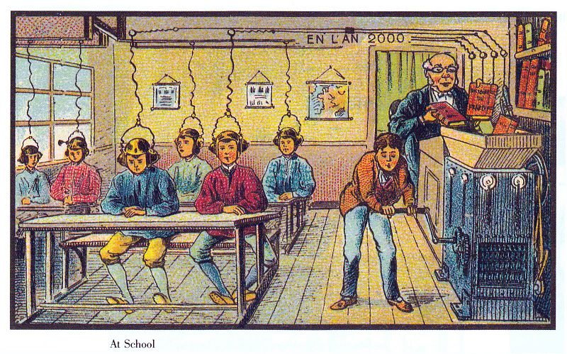

Econ520 - Syllabus¶
Fall 2021 - Prof. Lutz Hendricks¶
For those planning / buying ahead: the texts will be
Charles Jones. Introduction to Economic Growth, 3rd edition, 2013, ISBN-13: 978-0393919172. * The 2nd edition is very similar to the 3rd edition. Optional.
Olivier Blanchard. Macroeconomics, 8th ed., Pearson (ISBN-13: 9780136713883)
- Older editions of both books are ok and could be a lot less expensive.
- Ebooks are an affordable alternative. You will not need the MyLab access.
Class meets: Tue, Thr 2-3:15 Caldwell 103
Check the course web site regularly for updates.
- It contains contact info, office hours, class times, exam dates, course outline, slides, etc.
Course objective:¶
Econ520 develops macroeconomic models and applies them to real world issues.
Topics include:
- Fiscal policy.
- Monetary policy.
- Open economy (exchange rates, transmission of shocks across countries).
- Economic inequality.
- Long-run growth.
Economies are complex systems. To understand them, it is necessary to write down models.
Models need not be mathematical; they could be computational. But in this course, since we want to develop an understanding how macro variables interact, the models will be mathematical.
An integral part of the course is the term paper.
Grading¶
Grades will be based on
- midterm (40%)
- final exam (45%)
- term paper (15%)
If a student misses an exam for a good reason, the remaining exam accounts for 85% of the course grade. If a student misses an exam without a good reason, they will receive a score of 0 on that exam.
Each exam focuses on the material covered since the last exam. However, as new material builds on previously covered material, anything covered in the course up to the date of the exam is fair game.
Cutoffs for letter grades are: A: 85, B: 70, C: 55, D: 45.
There will be fractional grades (e.g. A-).
How to Study for This Class¶
Much of our time will be spent on analyzing models. There is only one way to learn how to do this: solve lots of practice problems.
You will find such problems for each topic we cover posted on the course web page. The exam questions will similar in nature but tend to be shorter than the practice problems.
If you feel that you are falling behind or if you have trouble with the practice problems, come to my office hours (listed on my web page).
You should also read the textbook sections corresponding to the material we study in class. Additional reading material is listed at the end of the slides.
A note on studying and classroom participation:¶
The picture below shows Jean-Marc Cote's vision of the classroom in the year 2000.
Unfortunately, this is not how it works...
It is extremely important that you work through the practice problems for each section of the course. Also look at previous exams. If you find that you have trouble with these questions, come to my office hours.

Source: Social Learning
Feedback¶
You can help improve this course by letting me know what you like and what you don't like. Drop me an e-mail or come to my office. Feel free to suggest topics you would like to discuss in class.
Policies¶
Please be on time when coming to class. Turn off your cell phones.
The professor reserves the right to make changes to the syllabus, including project due dates and test dates. These changes will be announced as early as possible.
Prerequisites¶
Students must have passed Econ420 (Intermediate Macroeconomics). Basic calculus (derivatives) will be needed. If you are not comfortable with math or models, this is not the right course for you.
Students should work through the math review problems posted on the course web site as soon as possible.
Covid-19¶
This semester, while we are in the midst of a global pandemic, all enrolled students are required to wear a mask covering your mouth and nose at all times in our classroom. This requirement is to protect our educational community — your classmates and me – as we learn together. If you choose not to wear a mask, or wear it improperly, I will ask you to leave immediately, and I will submit a report to the Office of Student Conduct. At that point you will be disenrolled from this course for the protection of our educational community. Students who have an authorized accommodation from Accessibility Resources and Service have an exception. For additional information, see* Carolina Together.
Attendance Policy¶
No right or privilege exists that permits a student to be absent from any class meetings, except for these University Approved Absences:
- Authorized University activities
- Disability/religious observance/pregnancy, as required by law and approved by Accessibility Resources and Service and/or the Equal Opportunity and Compliance Office (EOC)
- Significant health condition and/or personal/family emergency as approved by the Office of the Dean of Students, Gender Violence Service Coordinators, and/or the Equal Opportunity and Compliance Office (EOC).
Honor Code¶
All students are expected to follow the guidelines of the UNC honor code. In particular, students are expected to refrain from “lying, cheating, or stealing” in the academic context. If you are unsure about which actions violate that honor code, please see me or consult honor.unc.edu.
Accessibility¶
The University of North Carolina at Chapel Hill facilitates the implementation of reasonable accommodations, including resources and services, for students with disabilities, chronic medical conditions, a temporary disability or pregnancy complications resulting in barriers to fully accessing University courses, programs and activities.
Accommodations are determined through the Office of Accessibility Resources and Service (ARS) for individuals with documented qualifying disabilities in accordance with applicable state and federal laws. See the ARS Website for contact information: or email ars@unc.edu.
Conseling¶
CAPS is strongly committed to addressing the mental health needs of a diverse student body through timely access to consultation and connection to clinically appropriate services, whether for short or long-term needs. Go to their website: https://caps.unc.edu/ or visit their facilities on the third floor of the Campus Health Services building for a walk-in evaluation to learn more.
Title IX Resources¶
Any student who is impacted by discrimination, harassment, interpersonal (relationship) violence, sexual violence, sexual exploitation, or stalking is encouraged to seek resources on campus or in the community. Please contact the Director of Title IX Compliance (Adrienne Allison – Adrienne.allison@unc.edu), Report and Response Coordinators in the Equal Opportunity and Compliance Office (reportandresponse@unc.edu), Counseling and Psychological Services (confidential), or the Gender Violence Services Coordinators (gvsc@unc.edu; confidential) to discuss your specific needs. Additional resources are available at safe.unc.edu.
Special consideration¶
Students will not be granted special consideration if they have attempted a piece of assessment and then ask for special consideration. Unless it is impossible for you to do so, you must contact your lecturer before the assessment is due if you expect to miss an assessment task. Failure to do this will weaken your case.
Final exams can only be rescheduled by the Academic Dean. If you have a conflict, you need to contact him/her.
Past exams¶
(material in early years differs substantially from current year):
- 2021 Spring: Midterm
- 2017 Spring: Midterm, final
- 2016 Spring: Midterm, final
- 2015 Spring: exam1, exam2, final
- 2013 Fall: exam1, exam2, final.
- 2012 Fall: exam1, exam2, final.
- 2012 Spring: exam1, exam2, final.
- 2010 (course title was Econ499): exam1, exam2, final.